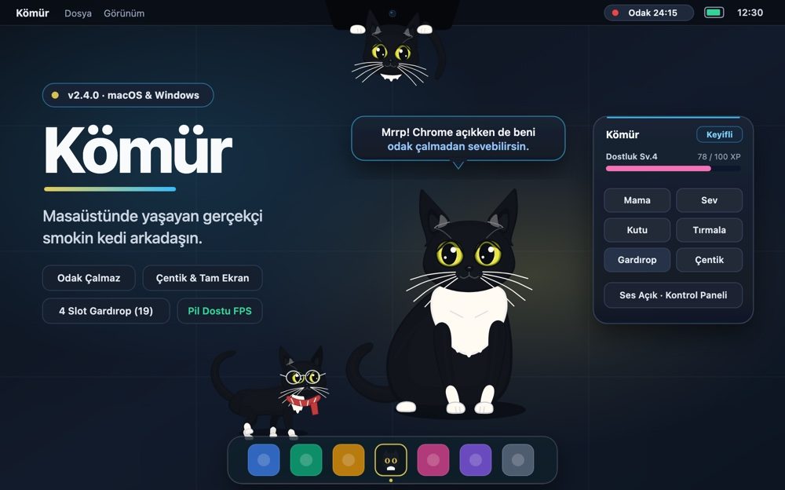

Masaüstü
Kömür
macOS ve Windows masaüstünde yaşayan gerçekçi bir kedi. Pencerelere tüner, kutusuna girip uyur, gerçek kedi sesleri çıkarır ve ne yaptığına göre tepki verir.
Projeye git →Süreç ve sonuç
Teknolojiler
Python, Tkinter, AppKit/CoreImage/CoreGraphics (macOS), user32/winsound (Windows), SQLite, PyInstaller.
Sürüm
2.4.0 · macOS (Apple Silicon · DMG/ZIP) & Windows 10/11 x64 · GitHub Release.
Neler yapar?
Gerçek Kömür çizimi, çevik 4 zamanlı yürüyüş, 4 slotlu 19 parçalı gardırop, odak çalmayan yüzen pencereler, MacBook çentiğinden bakma, tam ekran videoda köşede uyuma, pil dostu FPS, oyuncaklar, gerçek kedi sesleri ve Pomodoro.
Gizlilik
Pencere ve medya başlıkları kaydedilmez; ayarlar ve notlar yalnızca bilgisayarınızda tutulur.
Zorlandığım yer
macOS’ta tam ekran filmlerin üstünde kalma, touchpad’de ilk seferde 2 parmak sağ tık ve gerçekçi 4 zamanlı kedi yürüyüşünü harici kütüphanesiz çizmek.